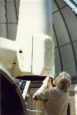
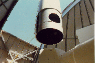
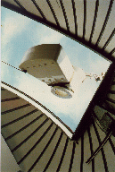
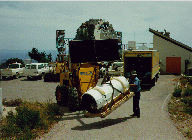

From 1974 to 1993, Stony Brook and the Harvard - Smithsonian Center for
Astrophysics (CfA) operated the 24-inch telescope at the CfA site on Mt.
Hopkins, about 40 miles south of Tucson, Arizona. Stony Brook Astronomers
used the telescope and traded with CfA Astronomers for time on CfA's
60-inch as well. At the right is a view through the slit of the dome
housing the 24-inch as seen from the dome of the 60-inch. Note the
astronomer near the base of the slit, servicing the instrument attached to
the telescope.

In 1993 CfA decided that its needs would be better served by a larger
telescope and at the termination of the agreement that year we proceeded to
dismantle the telescope and ship it back to Stony Brook. At the right, the
optics having been removed from the tube, Bas vant Sant, senior Mt. Hopkins
telescope technician, prepares to release the final bolts attaching the
tube to the Right Ascension axis.

The crane gingerly lifts the tube through the slit - the dismantling
begins in earnest.
The tube clears the dome.

This was followed by the Declination axis yoke, the housing for the
counter weights, left, and finally the massive base including the main
drives.

Finally, attached to pallets or crated, the pieces are loaded into the
rental truck for the week-long drive back East and a new home. Shown with
the packaged tube is Don Hogan, mountain superintendent.
{kind=link}
{kind=link}
{kind=link}
{kind=link}
{kind=link}